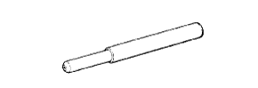
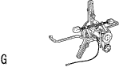

フロントサスペンション アームSUB-ASSY LWR NO.1 LH（4WD） 準備品 【取り付け】
|  | 09670-00010 | フロントクロスメンバ- ガイドツ-ル |
|  | 09772-30010 | ＣＣＫゲージ用コンペンセータ |
| ブレーキペダルプレッシャー | ||
| キャンバーキャスターキングピン ゲージ | ||
| ターニングラジアスゲージ | ||
| タイヤプレッシャーゲージ | ||
| ダイヤルゲージ | ||
| トーインゲージ | ||
 | AA-828 | ローラー測定子 (株)バンザイ·(株)イヤサカ扱い |
 | QL-100N | QLトルクレンチ（100N) (株)バンザイ·(株)イヤサカ扱い |
| QL-200N | QLトルクレンチ（200N) (株)バンザイ·(株)イヤサカ扱い |
| QL-50N | QLトルクレンチ（50N) (株)バンザイ·(株)イヤサカ扱い |